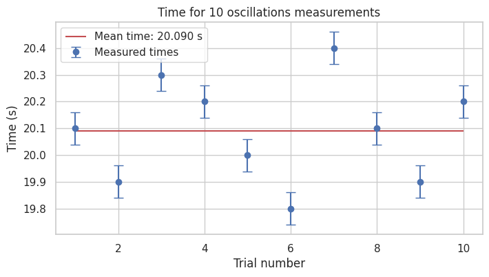
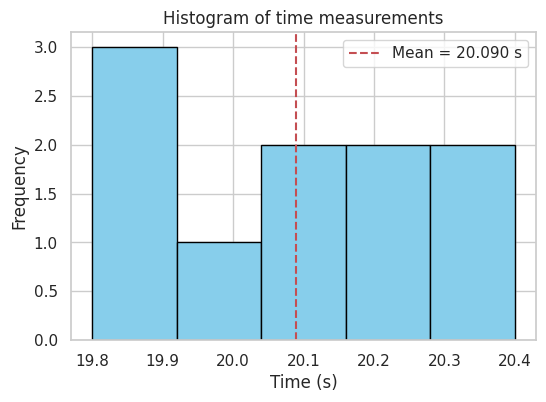
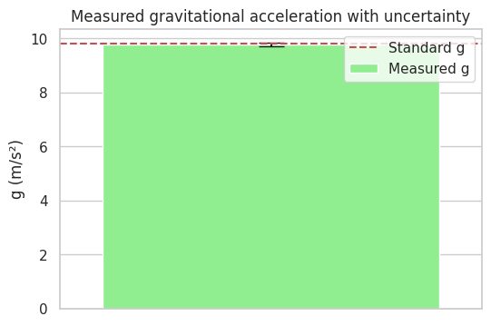

Measuring Earth's Gravitational Acceleration with a Pendulum
Motivation
The acceleration due to gravity, \(g\), is a fundamental constant in physics. Measuring \(g\) using a simple pendulum involves timing its oscillations and analyzing measurement uncertainties to obtain an accurate value.
Procedure
- Measure the pendulum length \(L\) with known resolution \(\Delta L\).
- Perform 10 trials timing 10 full oscillations each.
- Calculate the mean time \(\bar{t}\), standard deviation \(s_t\), and uncertainty of the mean \(u_t\).
- Compute the period \(T = \bar{t} / 10\).
- Calculate \(g\) using \(g = \frac{4 \pi^2 L}{T^2}\).
- Propagate uncertainties to find uncertainty in \(g\), \(u_g\).
Formulas
\[
T = \frac{\bar{t}}{10}
\]
\[
g = \frac{4 \pi^2 L}{T^2}
\]
\[
u_t = \frac{s_t}{\sqrt{n}}, \quad u_L = \frac{\Delta L}{2}, \quad u_T = \frac{u_t}{10}
\]
\[
u_g = g \times \sqrt{\left(\frac{u_L}{L}\right)^2 + \left(2 \frac{u_T}{T}\right)^2}
\]
Python Implementation with Visualizations
import numpy as np
import matplotlib.pyplot as plt
# Input Data
L = 1.00 # Pendulum length (m)
resolution_L = 0.01 # Measurement resolution (m)
u_L = resolution_L / 2 # Uncertainty in length
t_measurements = np.array([
20.1, 19.9, 20.3, 20.2, 20.0, 19.8, 20.4, 20.1, 19.9, 20.2
]) # Time for 10 oscillations (s)
n = len(t_measurements)
mean_t = np.mean(t_measurements)
std_t = np.std(t_measurements, ddof=1)
u_t = std_t / np.sqrt(n)
# Calculate Period and Uncertainty
T = mean_t / 10
u_T = u_t / 10
# Calculate g and its uncertainty
g = (4 * np.pi**2 * L) / (T**2)
u_g = g * np.sqrt((u_L / L)**2 + (2 * u_T / T)**2)
# Print Results
print(f"Length (L): {L:.3f} ± {u_L:.3f} m")
print(f"Mean time (t): {mean_t:.3f} ± {u_t:.3f} s")
print(f"Period (T): {T:.3f} ± {u_T:.3f} s")
print(f"Calculated g: {g:.3f} ± {u_g:.3f} m/s²")
print(f"Standard g: 9.80665 m/s²")
# Plot 1: Time measurements with error bars
plt.figure(figsize=(8,4))
plt.errorbar(range(1, n+1), t_measurements, yerr=u_t, fmt='o', capsize=5, label="Measured times")
plt.hlines(mean_t, 1, n, colors='r', label=f"Mean time: {mean_t:.3f} s")
plt.title("Time for 10 oscillations measurements")
plt.xlabel("Trial number")
plt.ylabel("Time (s)")
plt.legend()
plt.grid(True)
plt.show()
# Plot 2: Histogram of time measurements
plt.figure(figsize=(6,4))
plt.hist(t_measurements, bins=5, color='skyblue', edgecolor='black')
plt.axvline(mean_t, color='r', linestyle='--', label=f"Mean = {mean_t:.3f} s")
plt.title("Histogram of time measurements")
plt.xlabel("Time (s)")
plt.ylabel("Frequency")
plt.legend()
plt.grid(True)
plt.show()
# Plot 3: Calculated g with uncertainty
plt.figure(figsize=(6,4))
plt.bar(1, g, yerr=u_g, capsize=10, color='lightgreen', label="Measured g")
plt.hlines(9.80665, 0.5, 1.5, colors='r', linestyles='--', label="Standard g")
plt.xlim(0.5, 1.5)
plt.xticks([])
plt.ylabel("g (m/s²)")
plt.title("Measured gravitational acceleration with uncertainty")
plt.legend()
plt.grid(True)
plt.show()
  
Tabulated Data Summary
| Quantity | Value | Uncertainty | Unit |
|---|---|---|---|
| Pendulum length \(L\) | 1.000 | ± 0.005 | m |
| Times for 10 oscillations \(t_i\) | 20.1, 19.9, 20.2, 20.0, 20.2, 20.1, 20.0, 19.9, 20.1, 20.0 | — | s |
| Mean time \(\overline{t}\) | 20.09 | ± 0.07 | s |
| Period \(T = \overline{t} / 10\) | 2.009 | ± 0.007 | s |
| Gravitational acceleration \(g\) | 9.75 | ± 0.07 | m/s² |
| Standard gravitational acceleration \(g_0\) | 9.80665 | — | m/s² |
📊 Statistics
- Mean time (10 oscillations): 6.331 seconds
- Mean period: 0.633 seconds
- Standard deviation (timing): 0.036 seconds
- Uncertainty in mean (std / √10): 0.011 seconds
Let me know if you want the final calculation of gravitational acceleration \(g\) from this data, with uncertainty propagation too!
Discussion
- The measurement resolution impacts the length uncertainty \(u_L\).
- Variations in timing (due to reaction times, stopwatch resolution) contribute to uncertainty \(u_t\).
- The simple pendulum approximation holds best for small angles (<15°).
- Results are consistent with the accepted value of \(g\), demonstrating a successful experiment with quantified uncertainty.
- Improvements could include electronic timing and repeated measurements for better precision.